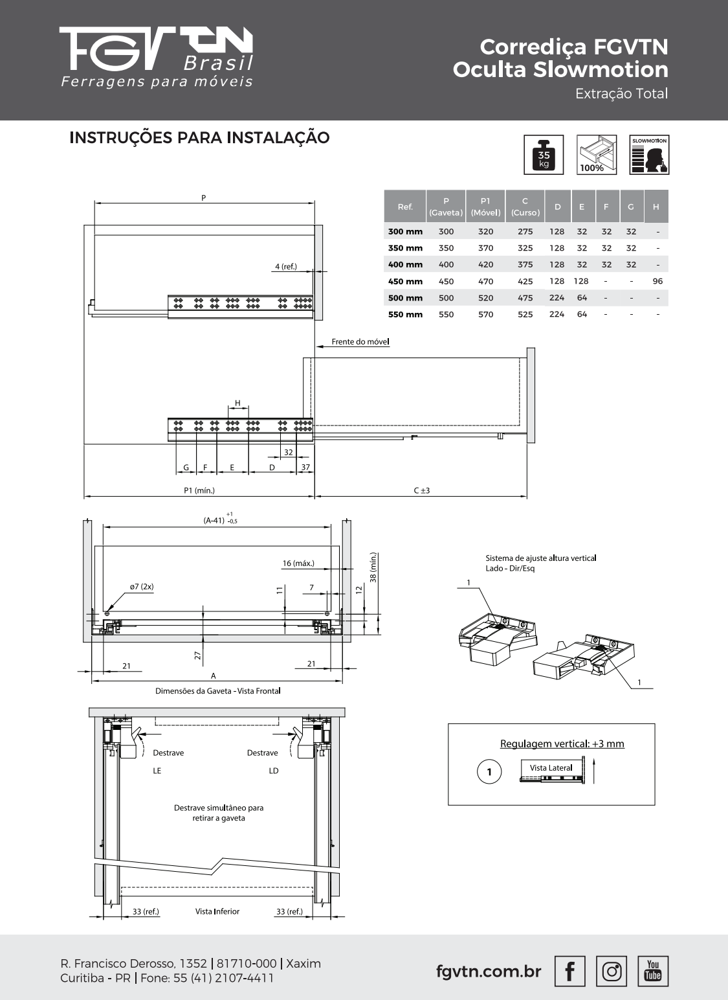

Consulta22/10/2026. Estudo separado; R42 não alterada. Documentação oficial já obtida foi relida visualmente. Não houve contato, compra ou aprovação de fabricação.
Na vista lateral, a linha “Frente do móvel” é a origem da profundidade livreP1, medida para dentro da carcaça. Coincide com a referência dos furos a37mm, atrás da frente aplicada. Não medir a partir da face externa da frente/puxador nem usar profundidade externa do móvel. O desenho mostra4mm de referência entre a ponta frontal da guia e essa linha. P corresponde à profundidade da caixa atrás da frente aplicada; P1 é o espaço mínimo do móvel. Medir primeiro obstáculo posterior ao longo de ambas as guias e também a área varrida pela caixa.
| SKU | CaixaP | Móvel livreP1mín. | CursoC |
|---|---|---|---|
| 54FGOC12500TSX0 | 500mm | 520mm | 475±3mm |
| 54FGOC12400TSX0 | 400mm | 420mm | 375±3mm |
Laterais até16mm; R41tem15mm. Largura interna=(A−41)+1/−0,5mm, ondeAé o vão entre as laterais da carcaça. Regular verticalmente até+3mm. Fundo e traseira devem respeitar desenho: dois furosØ7; centro indicado a7mm da face interna lateral e11mm acima da referência inferior apontada no desenho. Não confundir esses furos traseiros com parafusos dos engates frontais. O conjunto inferior inclui cotas12/27mm e mínimo38mm; copiar o desenho como conjunto de planos, sem concluir que o recuo12mm existente sozinho garante montagem. EngatesLE/LD próprios, destrave simultâneo; vista inferior mostra33mm de referência junto à traseira. Não foi obtida especificação completa de parafusos/furação dos engates, tolerâncias do recorte traseiro e compatibilidade do fundo15mm.
Instrução oficial, página1 · Ficha oficial, página1

Preservar frente aparente, espessuras e altura útil efetiva; aumentar caixa nominalmente1mm na largura (centrada) e10mm para trás. Bases internas candidatas: roupeiro314×469mm, cozinha542×469mm, escritório323×369mm. Recriar madeira/rasgos/engates em estudo separado, sem escalar globalmente sólidos. Exigir base e altura útil pelo menos iguais às anteriores, além de teste de carga35kg incluindo caixa/conteúdo. O curso menor exige conferir acesso às bandejas e à região posterior.
Este é dimensionamento preliminar candidato, ainda não solução fabricável completa: agenteCAD verifica profundidades e obstáculos. Se não houverP1livre520/420, não encurtar caixa mantendo o mesmoSKU, não avançar frentes nem reduzir armazenamento silenciosamente.
A ficha chamadaSet23 registraH96mm na linha500. A instruçãoSet2024 registraHtraço; nelaH96aparece na linha450. O catálogo oficial2024, localizado por busca, também apresentaH96no500. Não foi localizada errata pública ou confirmação de revisão do produto. Isso não autoriza escolher uma das tabelas por conta própria. D224/E64da500 e37mmfrontal são comuns, mas posição/quantidade dos parafusos deve seguir gabarito confirmado do lote e substrato.
O anúncioMagalu/Gasômetro confirmaSKU54FGOC12500TSX0 e um par, mas não explicita engates e informa imagens ilustrativas. Assim, sua inclusão nesse anúncio permanece incerta.
A Floresta oferece o mesmoSKU500mm e descreve expressamente um par de guias acompanhado de engates direito/esquerdo. Essa alternativa permite montar a lista com sete kits500 completos, sem comprar engatesBlum à parte. Não transfere essa garantia ao anúncioMagalu. Nenhuma compra realizada. O agente de orçamento conferiu a oferta diretamente nesta rodada:500mmR$75,11Pix/R$83,45normal;400mmR$66,71Pix/R$74,12normal. Sete kits500 e dois400 somamR$659,19Pix ouR$732,39normal. A diferença bruta combinada com46dobradiças passa aR$3.681,58, mantendo as referências históricasBlum e das dobradiças; não é nova cotaçãofechada dessas referências. Há variação porCEP e caches, frete e checkout não confirmados. Fonte400: https://www.ferragensfloresta.com.br/corredica-invisivel-40cm-com-amortecedor-extracao-total-35kg-fgv-tn/p . Valores consolidados pelo agente de orçamento, sem compra.
Timeout na releitura web dos PDFs foi transitório; cópias oficiais locais já legíveis permitiram análise. A página oficial de produto também apresentou timeout; a pesquisa indexada encontrou catálogo2024, mas não resolveu divergênciaH. Não houve negativa de autorização. Não afirmar compatibilidade física, carga validada ou aprovação de fabricação.